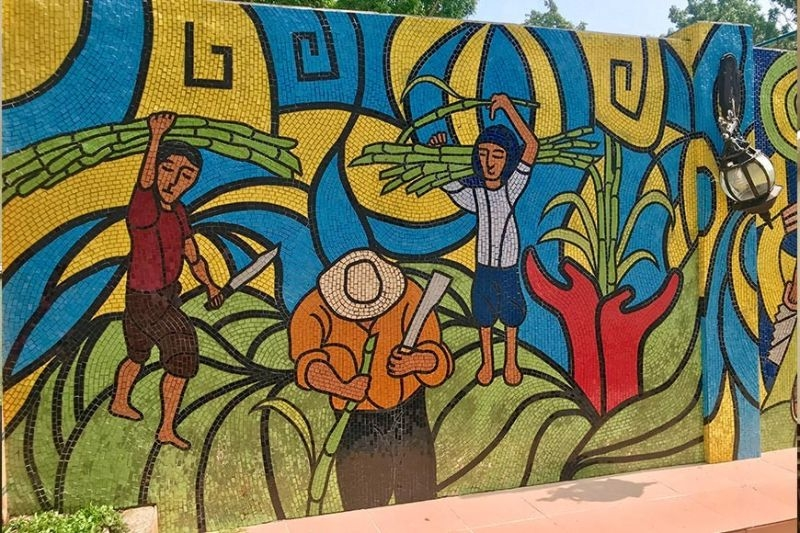
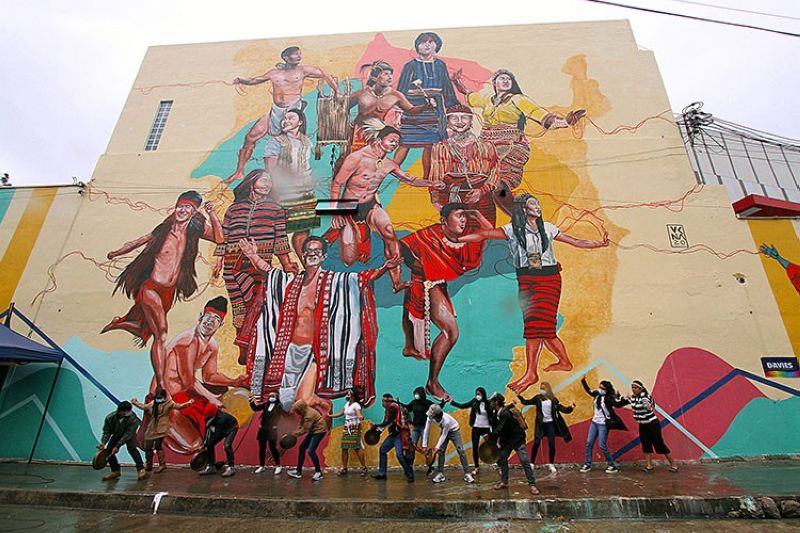
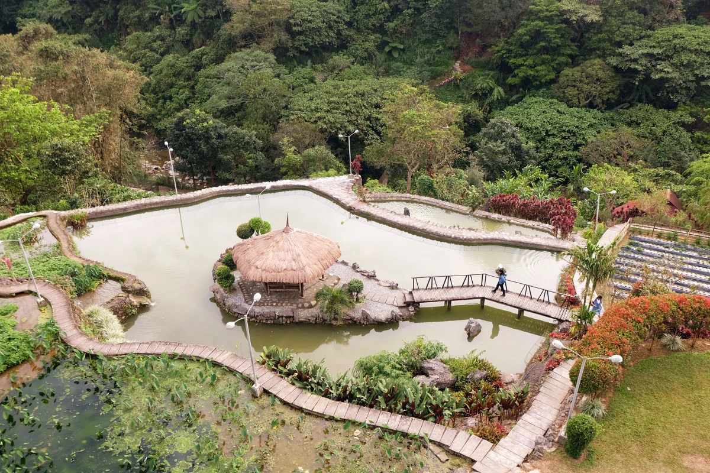

Baguio City's Literary Landscape: A Travelogue on Art for Art's Sake and Art for Social Purposes
Meet the AuthorIntroduction
Baguio City, frequently known as the "City of Pines" is a densely populated metropolis in the Philippines' northern region. It's known for its chilly temperature, picturesque landscapes, and different culture. Baguio City also boasts a thriving erudite community that has made important benefactions to Philippine literature. In this travelogue, we will look at the megacity's erudite culture and how it reflects the city's station toward "art for art's sake" vs "art for social purposes."
"art for art's sake" versus "art for social purposes"
A Brief Overview of Baguio City's Literary Scene
Baguio City has a rich literary heritage that has made a significant contribution to Philippine literature. Many of the nation's most illustrious authors, including Nick Joaquin and Jose Garcia Villa, have lived there at some point in their lives. The city is also home to numerous literary organizations, festivals, and events that honor the written word.

Art for Art's Sake
The "art for art's sake" school of thought has significantly influenced Baguio City's literary landscape. This strategy puts an emphasis on creative expression and originality while putting the work's beauty and aesthetics above social or political considerations. Writers and poets are lauded for their inventive use of language and outlandish writing styles, such as Jose Garcia Villa, who is well-known for his "comma poetry." One of the earliest literary groups in the city that adheres to this idea is the Baguio Writers Group, which was established in 1937. They hold that literature should be valued for its own sake, independent of any social or political significance. This strategy has resulted in a wide and varied spectrum of literature that highlights the brilliance and creativity of the area's artists.
Art for Social Purposes
There are writers who prioritize "art for social purposes," which sees art as a tool for social and political change, and many writers in Baguio City use their art to raise awareness of social and political issues. While "art for art's sake" has had a significant impact on the literary scene in Baguio City, there are also writers who prioritize "art for social purposes". They discuss issues like poverty, inequality, and breaches of human rights among others in their literature.
One of the literary groups in the city that places a high priority on social advocacy and participation is the Philippine Writers League, established in 1927. They utilize their position to advocate for social fairness and reform because they think that writing can be a potent agent for change. Their work demonstrates how literature can be used as a tool for advocacy and action in addition to being an expression of aesthetic talent. Overall, these two methods present various viewpoints on the function of literature and how it might influence society.
Literary Landmarks in Baguio City
Numerous literary landmarks can be found in Baguio City, showcasing the city's extensive literary history. One such landmark is the Baguio City Public Library, which hosts several literary activities and events as well as a substantial collection of Philippine literature. It serves as the center of the neighborhood's literary scene by giving authors and readers a place to congregate and interact.
The Bencab Museum, owned by famous artist Benedicto Cabrera, is another literary treasure in Baguio City. While the museum is primarily dedicated to visual art, it also houses literary works by Cabrera's friends and colleagues. Visitors may explore the displays and become immersed in the space's creative environment.
The Laperal White House is a noteworthy historical landmark situated in Baguio City and was erected during the 1920s. Being linked to the Laperal family, a prominent family in Baguio City's history, and serving as a location for literary events and activities are what makes it remarkable. Cultural and literary events are held at the home after it underwent repairs, thus increasing its value in terms of literature. Overall, these famous spots in literature yield visitors an insight into the literary customs and legacy of Baguio City.

"Noteworthy Landmarks"
Resolution
Baguio City's rich history and culture are reflected in its literary scene, in conclusion. Whether it's for artistic expression or to raise awareness on social issues, the writers of Baguio City have greatly contributed to Philippine literature by writing about various topics and themes. Hopefully, this travelogue has provided you with a glimpse into the literary world of Baguio City and motivated you to explore it further.
Let's all appreciate and explore the literary heritage of Baguio City and other cities in the Philippines as a resolution. Recognizing the power of literature to inspire change, and celebrating the diversity and vibrancy of our country's literary culture.